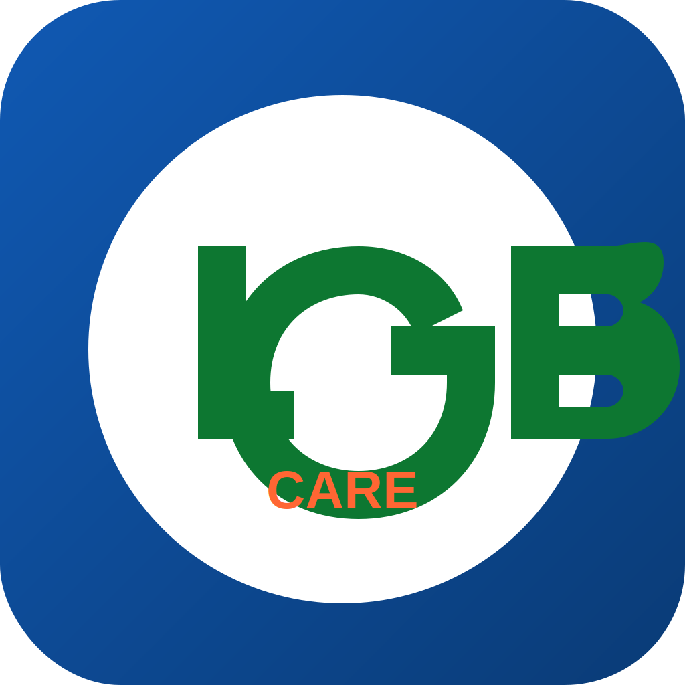

Improved App Icon Design for Apple App Store

Improved icon design aligned with Apple guidelines
Key Improvements Made
Design Changes:
- Background: Changed from flat blue to a subtle gradient that adds depth and sophistication
- Logo Size: Enlarged the LGB logo to better fill the square space, making it more visually impactful
- Text Change: Changed "STAFFING" to "CARE" - larger text that's more legible at smaller sizes
- Visual Depth: Added subtle shadows to create a more polished, modern look that Apple prefers
- Letter Shapes: Refined the letter shapes to be more balanced and professional
Why This Design Will Help With Apple Approval
- Better space utilization: The enlarged logo better fills the square canvas, a key Apple requirement
- Improved legibility: Larger text with better contrast ensures visibility at all icon sizes
- Professional polish: Gradients and subtle shadows make the icon look more refined and professional
- Brand consistency: Maintains your brand identity while aligning with iOS design language
- Scalability: Design elements will remain clear and identifiable at smaller sizes
Next Steps
- Export this SVG to PNG format at all required iOS sizes (you can use tools like Sketch, Figma, or online SVG-to-PNG converters)
- Replace all existing icon files in
apps/mobile/assets/ios/AppIcon.appiconset/ with these new designs
- Make sure the filenames match exactly what's in your
Contents.json file
- Also update the main icon at
apps/mobile/assets/icon.png and apps/mobile/assets/adaptive-icon.png
- Rebuild your app and submit to the App Store with a note that you've updated the app icon
Recommended Export Sizes
- 1024×1024 pixels (App Store)
- 180×180 pixels (iPhone 6 Plus and later)
- 120×120 pixels (iPhone 4s and later)
- 87×87 pixels (Apple Watch)
- 80×80 pixels (Spotlight)
- 60×60 pixels (iPhone settings)
- 58×58 pixels (Settings)
- 40×40 pixels (Spotlight)
- 29×29 pixels (Settings)
- 20×20 pixels (Notification)
Note on App.json Configuration
We've already updated your app.json configuration to properly reference your icon files. The configuration now includes:
"ios": {
"supportsTablet": true,
"bundleIdentifier": "com.lifegotbetterhomecare.mobile",
"buildNumber": "1",
"icon": "./assets/icon.png",
"iconFamily": "./assets/ios/AppIcon.appiconset/Contents.json"
}
This ensures that both the main icon and the proper iOS icon family are referenced correctly.
Final Thoughts
This improved icon design maintains your brand identity while better aligning with Apple's design guidelines. The enhancements address the key issues that might be causing your app's rejection, particularly the space utilization and text legibility concerns.
Remember to thoroughly test your app with the new icon on a real iOS device before resubmitting to ensure it displays correctly in all contexts.